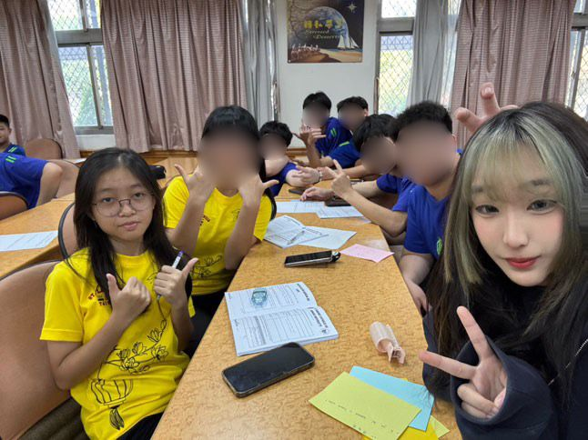
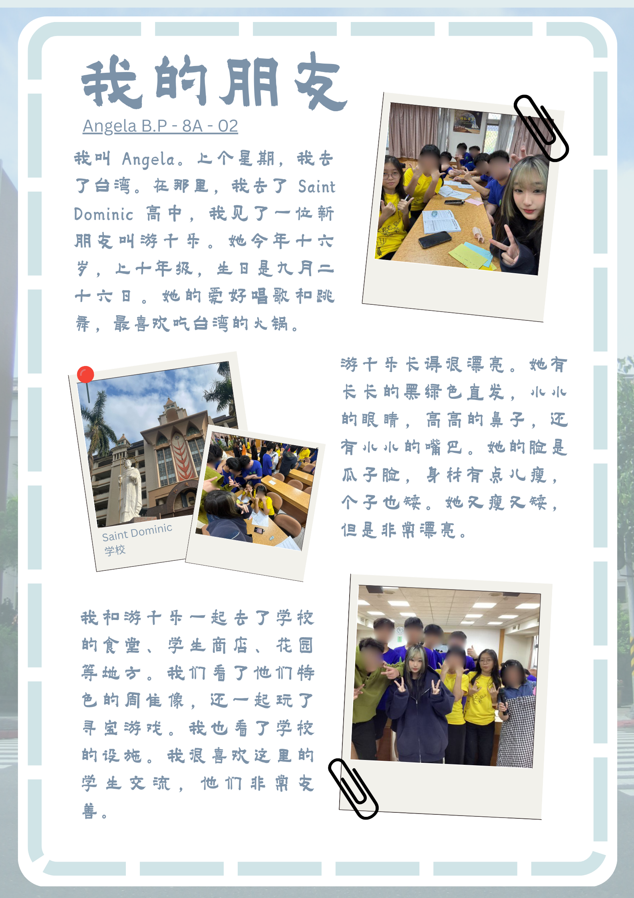

Angela Benedette Pranoto 8A / 02
Saya mewawancarai teman saya dari Wenzao University dalam Bahasa Mandarin. Namanya adalah 游千乐, berumur 16 tahun dan duduk di kelas 10. Ulang tahunnya jatuh pada tanggal 26 September. Ia memiliki hobi menari dan menyanyi, serta suka makan hotpot khas Taiwan. Ia sangat cantik, dengan rambut panjang berwarna hitam dan highlight hijau. Posturnya pendek dan kurus, dengan mata kecil, hidung mancung, mulut kecil, dan telinga kecil. |
||
|  |  | |